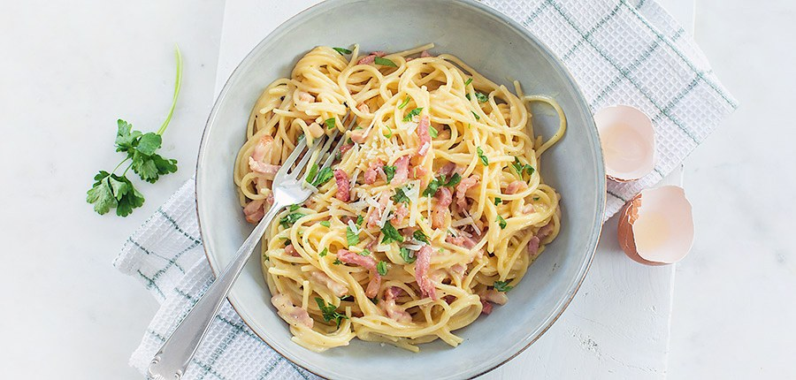

pasta carbonara

Ingrediënten
- 400g spaghetti
- 2el peterselie
- 100g geraspte parmezaan
- 1 teentje knoflook
- 150g gerookte spekblokjes
- peper
- zout
- 1 sjalot
- 4 eieren
- een klontje boter
Bereiding
- Kook de spaghetti gaar volgens de aanwijzingen op de verpakking.
- Bak ondertussen de spekblokjes krokant in een pan zonder vetstof.
- Fruit het sjalotje met de look in een klontje boter.
- Giet de spaghetti af in een vergiet en doe in de pan met de sjalot.Breek de eieren in een kom en klop ze los met een vork.Voed de geraspte parmezaan toe,en roer goed met de eieren.
- Haal alles van het vuur.Meng nu de pasta,met de ui,de spek, en het eierenmengsel.Kruid met peper,zout en peterselie, en roer goed.